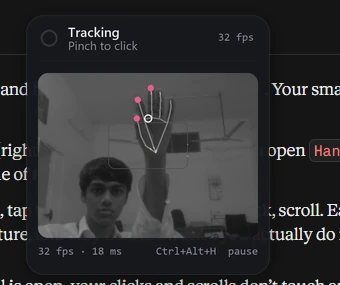
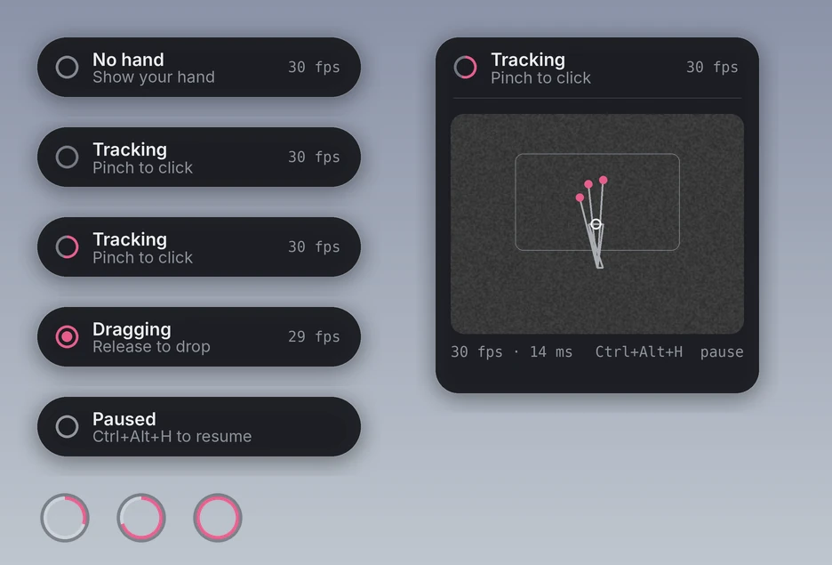
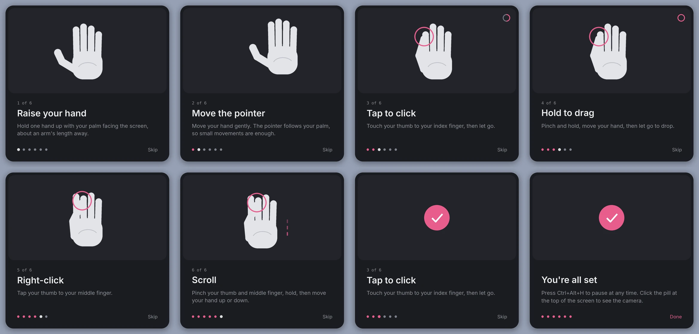

HandMouse 2
Controlling a Windows laptop with hand gestures and a webcam.
October 2026 · AI-directed build: I set the requirements, made the design decisions, and tested and tuned it on my own laptop. Claude (Anthropic) wrote the code.
Summary

HandMouse 2 turns an ordinary laptop webcam into a pointing device. You move the cursor with your palm, pinch your thumb and index finger to click or drag, and pinch your thumb and middle finger to right-click or scroll. It runs locally on a budget laptop (AMD Ryzen 3 5300U, integrated graphics) at 32 frames per second, with each frame processed in 18 ms, measured on that machine.
It replaces my first version, HandMouse 1 (October 2026), which worked but was hard to use. This report covers what went wrong in version 1, the ideas I took from Apple's gesture design, how version 2 works, and what it still can't do.
What was wrong with version 1
Version 1 had eight gestures: a bent index finger to click, a fist, an open palm, the letters V, C and O for app switching, a pinch to drag, and a long blink to take a photo. When I tested it:
- The cursor jittered, even with my hand held still.
- Clicking moved the cursor. Bending the index finger to click also moved the fingertip that was steering the cursor, so clicks landed off target.
- Gestures were misread. A clean V sign was read as an open palm. The first fix was to measure finger extension in the 2D camera image instead of estimating depth.
- It was slow on my laptop, because a face model ran alongside the hand model to detect blinks.
What I took from Apple
I studied how Apple designs hand input for Vision Pro and the Apple Watch double tap. Four ideas carried over:
- Aiming and confirming are separate. On Vision Pro your eyes aim and a pinch confirms, so confirming never disturbs the aim. HandMouse 2 anchors the cursor to the palm (the midpoint of the index and middle knuckles), which barely moves when you pinch.
- A pinch is the main action. A thumb touching a finger is a distinct, deliberate signal and easy to tell apart from ordinary hand movement.
- Few gestures, each done on purpose. Apple Watch's double tap is one narrow gesture mapped to the main action. I dropped every extra gesture from version 1 (fist, palm, V/C/O, blink). Nothing happens unless you pinch.
- Small movements, quiet feedback. Your hand should be able to rest and move a little. Feedback is a subtle ring, not a busy display.
How it works
webcam 640×480, 30 fps → MediaPipe Hands (lite model), 21 hand landmarks → palm anchor (index + middle knuckles) → One Euro filter → pinch state machine → 120 Hz cursor glide → Windows mouse input
- Reach area. A rectangle in the middle of the camera image maps onto the whole screen, so you don't have to stretch to reach the corners. I narrowed it after testing, because reaching the top edge was pushing my fingers out of the camera frame.
- Smoothing. The One Euro filter (Casiez, Roussel and Vogel, CHI 2012) adapts to speed. It smooths heavily when your hand is nearly still, which removes jitter, and lightly when it moves fast, which avoids lag. A separate thread then eases the cursor towards its target 120 times a second, so motion looks fluid even though the camera only gives 30 frames a second.
- Pinch detection. The gap between two fingertips is divided by the length of the palm, so the threshold works at any distance from the camera. A pinch counts as closed below 0.19 of a palm length and open above 0.28. The gap between those two thresholds stops the state flickering at the boundary.
- Click lock. As a pinch closes, the cursor slows down. While fingers are touching it is locked in place, which makes clicks land where you aimed. If you keep holding the pinch for 0.22 s, or move your hand, it becomes a drag.
- Interface. The interface is a small status pill at the top of the screen and a ring around the cursor that fills as you pinch. Both are drawn as native transparent Windows layered windows. Clicking the pill shows the camera view with the hand skeleton and the reach area.
- Safety and privacy. Ctrl+Alt+H pauses tracking from anywhere. Pausing switches the camera off. If the hand leaves the frame mid-drag, the mouse button is released. Everything runs on the laptop and nothing is uploaded.

Gestures
| Gesture | Action |
|---|---|
| Move your hand | Move the cursor |
| Thumb + index, tap | Left click (tap twice to double-click) |
| Thumb + index, hold | Drag; let go to drop |
| Thumb + middle, tap | Right-click |
| Thumb + middle, hold, move up or down | Scroll |
First-run tutorial
The first time it opens, HandMouse 2 shows a six-step tutorial, styled after Apple's onboarding screens.
- Each step has an animated hand showing the gesture.
- It moves on only when you actually do the gesture.
- A small ring fills as you pinch, so you can see how close you are.
- Practice is safe. While the tutorial is open, clicks and scrolls are kept away from the desktop.
You can replay it from the pill's menu. The user guide covers everyday use.

Results
| Measure | Result | How it was measured |
|---|---|---|
| Frame rate | 32 fps | Live counter in the app, on my laptop |
| Processing time per frame | 18 ms | Same, averaged over recent frames |
| Cursor jitter with a still hand | 6.9 px → 2.2 px (standard deviation) | Simulated hand with added noise, not live camera data |
| Gesture logic | Click, double-click, drag, right-click, scroll and hand-loss release all pass | Automated tests on simulated hand movements |
| Windows interface | Status pill and tutorial open correctly | Run on a simulated Windows environment |
Limitations
- Tested by one person, on one laptop, in one room. Pinch thresholds and the reach area were tuned to my hand. Other hands, lighting and cameras may need different settings. These live in a small JSON file next to the app.
- The jitter figure comes from simulation. I haven't yet measured cursor jitter or click accuracy with the live camera. A proper test would time target-clicking tasks against a normal mouse and the touchpad.
- One hand only, and it needs reasonable light.
- Windows only.
Next steps
- A small timed target-clicking test, for real accuracy and speed numbers against the touchpad.
- Calibration in the tutorial, learning each person's pinch distance instead of using a fixed threshold.
Screenshots
Credits and sources
- MediaPipe Hands (Google), for hand landmark detection.
- Casiez, G., Roussel, N. and Vogel, D. (2012). 1€ Filter: A Simple Speed-based Low-pass Filter for Noisy Input in Interactive Systems. CHI 2012.
- Apple Human Interface Guidelines, visionOS (gestures, comfort, feedback); Apple Watch double tap (2023).
- Code written by Claude (Anthropic) to my specification. Source: HandMouse2.py.